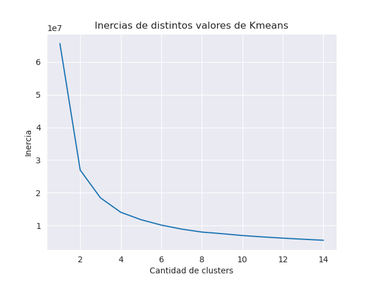
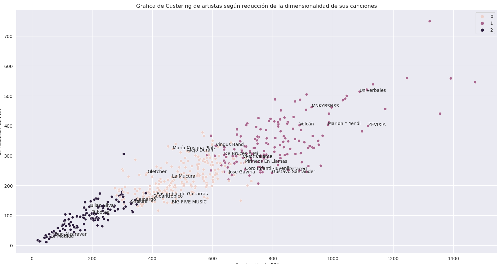
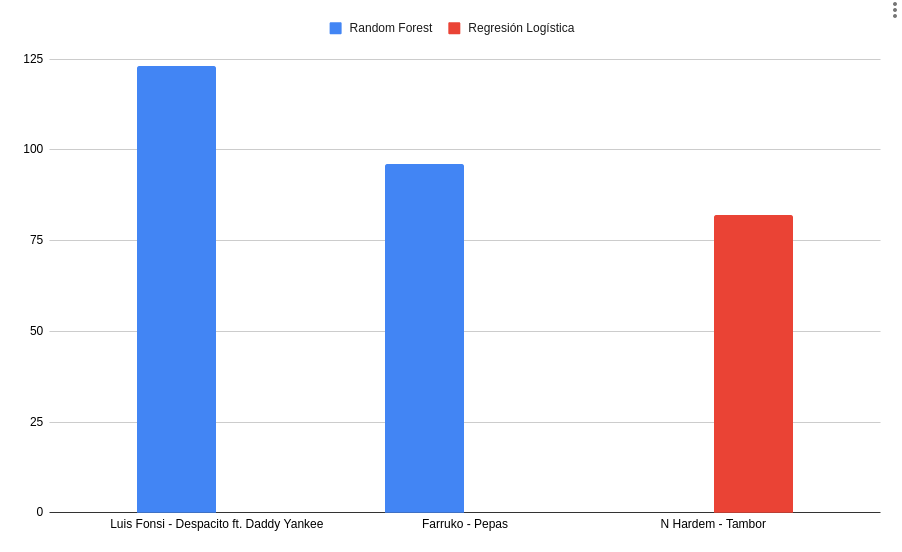

¿Cómo suena Colombia?
1. Resumen
Colombia es un país muy diverso, debido a las diferentes culturas y movimientos culturales que hay en nuestro país el panorama de la música es bastante difuso, esto porque para los músicos resulta una tarea titánica tratar de entender los sonidos y las corrientes musicales que hay en nuestro país e identificar patrones sobre ellos ya que para lograr esto se tendría escuchar la música de todas las agrupaciones en Colombia. Además, es una tarea muy difícil intentar llevar un registro formal de las agrupaciones musicales en el país puesto que las bandas musicales no siempre están registradas en las mismas plataformas, además, constantemente están naciendo nuevas bandas musicales y a su vez van muriendo otras.
El análisis estadístico de datos es una rama de las ciencias de la computación que permite inferir distintas propiedades de los datos a partir de métodos que se sustentan en la estadística, generalmente, responde a tres problemas específicos; la predicción de factores , la clasificación y el agrupamiento. Éstas herramientas fueron de gran ayuda para ampliar nuestros conocimientos sobre los sonidos musicales que hay en Colombia.
En este informe se hizo un análisis de la música en colombia usando métodos del análisis estadístico de datos, de esta forma, se pueden inferir patrones en la música colombiana que pueden facilitar una aproximación a la exploración del panorama de la música en Colombia.
2. Preguntas
Una de las principales motivaciones que tuvo este informe era entender que tipos de agrupaciones musicales hay en Colombia y visualizarlas, ya que siendo un país tan diverso, desde la perspectiva del análisis de datos , ¿cuáles tipos de música predominan en el país? , ¿cuántas y cuales agrupaciones de grupos que cumplen los mismos patrones existen?.
Otra de las motivaciones que tuvo este informe fue entender desde un fin comercial de la música que factores pueden influir en la popularidad de una banda y proponer una estrategia para las bandas musicales que pueda aumentar su popularidad en plataformas como Spotify. Además, ver si es posible predecir la popularidad de una canción según factores que estén implícitos en su respectivo mel-espectrograma.
3. Métodos Usados
3.1. Respecto a la recolección de datos:
Puesto que no existe una base de datos que contenga información sobre las bandas en Colombia y sus diferentes sonidos, el grupo optó por generar su propia tabla de datos utilizando técnicas de recolección de datos de revistas de música en Colombia, para esto se usaron librerias de python tales como Selenium, bs4 y requests.
Se recolectaron los nombres de las bandas que están en el bomm (Bogotá Music Market) , en Circulart , en La FM y además se añadieron las bandas que están registradas en el SIMUS. Posteriormente, a cada banda se le hizo una búsqueda en spotify para relacionarla con variables que la API de spotify proporciona, tales como la bailabilidad de ésta, la media del tempo de sus canciones, la popularidad, la duración promedio de sus canciones…etc.
3.2. Respecto a la descripción de el sonido específico de una canción y la reducción de dimensionalidad:
Una vez teniendo los nombres de las bandas , se descargó la canción mas popular de cada banda de youtube y se calculó su respectivo mel-espectrograma , sin embargo, esto suponía un problema de memoria, puesto que no es posible almacenar miles de espectrogramas de canciones en la RAM de los computadores de los integrantes del grupo. La solución a este problema es que, al ser los mel-espectrogramas matrices de la forma \(A=128\times k\) en donde \(k\) representa el sampleo con respecto al tiempo de una canción , fue posible aplicar métodos de reducción de dimensionalidad como PCA(Principal Component Analysis) para representar el sonido de las canciones en vectores de 128 dimensiones, en los que cada variable representa valores singulares del resultado de reducir la dimensionalidad del mel-espectrograma.
Adicionalmente, como uno de los propósitos del proyecto era visualizar los distintos sonidos que hay en nuestro país, se adicionaron dos variables extras que son el resultado de reducir la dimensionalidad de cada mel-espectrograma a 2 dimensiones, esto con el fin de poder graficar los sonidos de cada banda musical en 2 dimensiones.
El grupo es consciente de que una canción no es suficiente para representar el sonido de una banda, por lo que se planteó la opción de concatenar varias canciones, sin embargo, aunque está implementado, el grupo se vió forzado a optar por la canción más popular de cada agrupación debido a que el proceso de reducir la dimensionalidad de la concatenación de varias canciones es pesado computacionalmente y había limitaciones de hardware. El proceso de reducir la dimensionalidad de una canción por banda tomó al rededor de 10 días en una máquina T2-micro de AWS.
3.3. Respecto a la agrupación(clustering):
Como uno de los propósitos del proyecto era entender que tipos de agrupaciones musicales hay en nuestro país, se implementó K-Means sobre los vectores que representaban el sonido de cada banda
3.4. Respecto al Análisis de Correlaciones:
Se implementó un modelo de regresión lineal para detectar si había correlaciones entre los sonidos de las canciones y la popularidad de las bandas
3.5. Respecto a la predicción de la popularidad de canción:
Se implementó un modelo de una regresión logística para intentar diferenciar bandas populares de bandas impopulares, sin embargo, esto no funcionó, por lo que, el grupo siendo consciente de que el tema no fue parte del curso de análisis de datos, se implementó un modelo de random forest que obtuvo mucho mejores resultados.
4. Resultados:
4.1. Respecto a la agrupación(clustering):
la siguiente gráfica muestra la inercia que conserva la cantidad de clusters establecidos por los vectores representantes del sonido de cada banda.

Usando el criterio del codo, se estableció que 3 sería un buen número de clusters para estos datos, así, luego de implementar K-Means y analizar el contenido de cada grupo, se obtuvieron los siguientes resultados:

4.1.1. Discusión
En estos clusters se pueden apreciar las siguientes regularidades:
- el grupo de más a la izquierda(2-negro) contiene bandas pertenecientes a la escena indie-alternativa en Colombia
- el grupo del medio (0-ocre) contiene bandas pertenecientes a la escena pop en Colombia
- el grupo de la derecha(1-morado) contiene bandas que frecuentan sonidos latinoamericanos (reggaeton, dancehall , música del pacífico…etc)
de los siguientes grupos se puede ver que las variables que mas los diferencian son:
- la popularidad.
- la varianza de la popularidad.
- las varianzas de tempo en las canciones de los artistas.
| Cluster 0 | Cluster 1 | Cluster 2 | Varianza | |
|---|---|---|---|---|
| popularity mean | 9.63778 | 6.57615 | 7.56232 | 1.62818 |
| popularity variance | 69.5904 | 54.5974 | 56.1064 | 45.4319 |
| duration mean | 226307 | 234865 | 235132 | 1.67981e+07 |
| duration variance | 3.896e+09 | 4.71516e+09 | 4.31885e+09 | 1.11878e+17 |
| tempo variance | 807.326 | 780.103 | 781.798 | 155.064 |
De esto se puede concluir que:
- Aunque las bandas que pertenecen al grupo de la derecha(1-morado) tienden a ser mas populares que las de los otros grupos, también hay más varianza de popularidad, es decir que, hay artistas sumamente populares pero también hay artistas muy desconocidos que frecuentan estos ritmos
- Las popularidades de las bandas que no pertenecen al grupo de sonidos latinoamericanos es muy parecida, sin embargo, la varianza de popularidad del grupo de pop es menor a la de los otros grupos, por lo que, para una empresa discográfica, invertir dinero en una banda de pop representa un riezgo menor que invertirlo en una banda de indie
- La varianza de tempo en el grupo de la música latinoamericana es mayor que en los otros dos grupos, esto se debe a que en este género hay artistas que tienen canciones muy diferentes entre si.
- el resto de variables de spotify no proporciona información que sea considerada por la agrupación de K-Means
- Aún cuando históricamente la humanidad haya agrupado a la música en géneros musicales, estos son solamente cateogrías que se han asignado por fines comerciales, sin embargo pueden existir otras formas de agrupar la música según otros criterios u otras métricas, los distintos algoritmos de aprendizaje no supervisado pueden proporcionar diferentes visiónes del panorama musical que no necesariamente estén ligadas a géneros musicales.
4.2. Respecto a la clasificación según la popularidad
resultados de predicciones de popularidad de canciones que no pertenecen a los datos:

4.2.1. Discusión:
- Los vectores que describen el sonido de cada canción tienen comportamientos muy poco lineales, por lo que una regresión logística no puede relacionar esta clase de valores con la popularidad de una canción, sin embargo, modelos como Random Forest si pueden, haciendo posibles herramientas para la predicción de la popularidad de bandas en plataformas como spotify.
5. Bibliografía:
5.1. Bomm:
El BOmm(Bogotá Music Market) es una revista en la cuál se registran bandas que frecuentan en Bogotá: referencia : https://www.bogotamusicmarket.com/
5.2. Circulart:
Circulart es una revista en la cuál se registran bandas que frecuentan en Medellín referencia : https://circulart.org/2021/
5.3. SIMUS:
El SIMUS es una base de datos en la cuál se tienen que registrar todas las bandas que tienen contratos con el estado referencia : https://simus.mincultura.gov.co/
5.4. LastFM:
LastFM es una página que contiene mucha información sobre artistas, contiene la categoría de artistas colombianos por lo que fue de grán ayuda para este proyecto referencia : https://www.last.fm
6. Anexos:
Todo el proyecto fue desarrollado en el siguiente repositorio: https://github.com/Rootdrigo/Colombian_Music_State